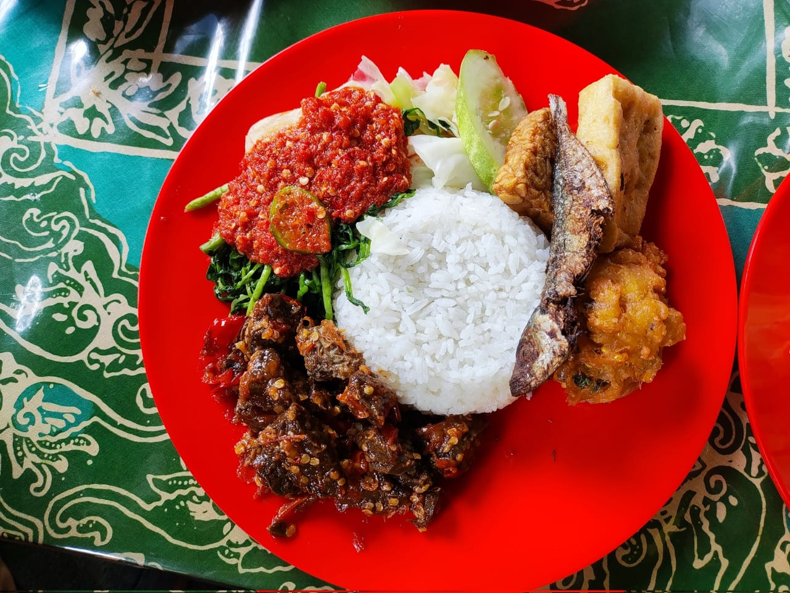
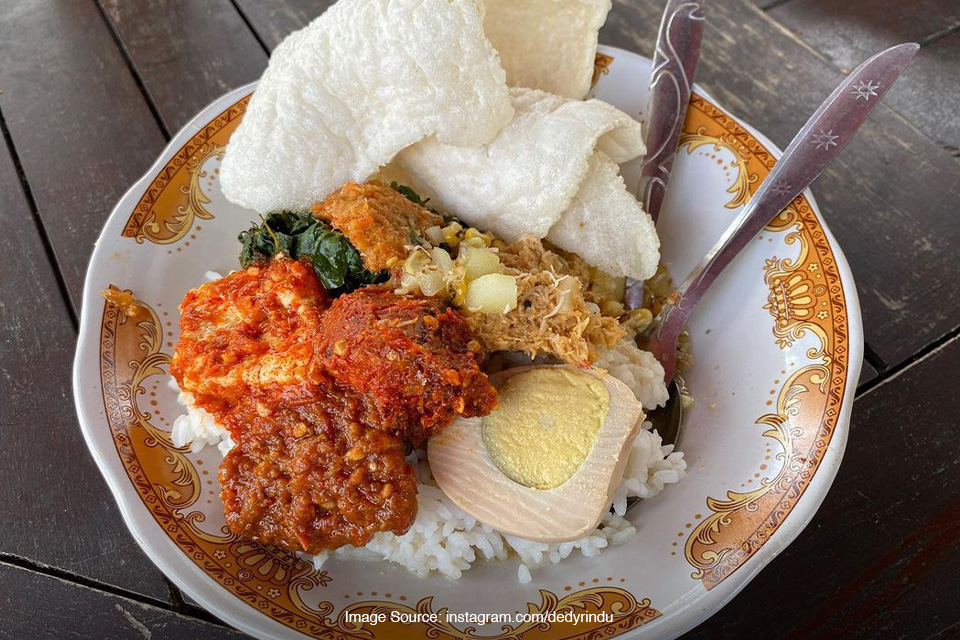

5 Makanan Unik Khas Banyuwangi,
Banyak Yang Unik,
Salah Satunya Sego Tempong

11. Botok Tawon

Botok tawon adalah makanan khas Banyuwangi yang terbuat dari sarang tawon yang sudah tidak berisi lagi, kemudian dicampur dengan kelapa parut, bumbu-bumbu, dan daun pisang sebagai pembungkusnya.
Botok tawon biasanya dikukus hingga matang dan disajikan dengan nasi putih.
Rasanya yang gurih dan unik membuat botok tawon menjadi salah satu makanan favorit di Banyuwangi.
Baca Juga Tentang Resep Botok Tawon
Botok tawon memiliki cita rasa yang khas dan unik, karena menggunakan sarang tawon sebagai bahan utamanya. Sarang tawon memberikan aroma dan rasa yang berbeda pada botok ini.
12. Sego Cawuk

Sego cawuk adalah makanan khas Banyuwangi yang terbuat dari nasi putih yang disajikan dengan berbagai lauk pauk seperti ayam goreng, telur pindang, tempe goreng, dan sambal.
Yang membuat sego cawuk berbeda dari nasi campur lainnya adalah sambal yang digunakan, yaitu sambal cawuk yang terbuat dari campuran cabai rawit, tomat, terasi, dan garam yang diulek hingga halus.
Sego cawuk biasanya disajikan dengan lalapan seperti kemangi, mentimun, dan daun selada.
Rasanya yang pedas dan segar membuat sego cawuk menjadi salah satu makanan favorit di Banyuwangi.
Baca Juga Tentang Resep Sego Cawuk
Penyajian sego cawuk biasanya dilengkapi dengan nasi putih hangat, ayam goreng, telur pindang, tempe goreng, sambal cawuk, dan lalapan.
13. Tahu Campur

Tahu campur adalah makanan khas Banyuwangi yang terbuat dari tahu goreng yang dipotong kecil-kecil, kemudian dicampur dengan lontong, tauge, selada, dan kerupuk.
Yang membuat tahu campur berbeda dari tahu lainnya adalah kuah yang digunakan, yaitu kuah petis yang terbuat dari campuran petis udang, gula merah, cabai, dan air asam.
Tahu campur biasanya disajikan dengan taburan bawang goreng dan sambal sebagai pelengkapnya.
Rasanya yang gurih dan pedas membuat tahu campur menjadi salah satu makanan favorit di Banyuwangi.
Baca Juga Tentang Resep Tahu Campur
Penyajian tahu campur biasanya dilengkapi dengan taburan bawang goreng dan sambal sebagai pelengkapnya.
14. Kupat Lodoh

Kupat lodoh adalah makanan khas Banyuwangi yang terbuat dari ketupat yang disiram dengan kuah santan yang gurih dan pedas.
Kuah santan pada kupat lodoh ini terbuat dari campuran santan, cabai, bawang merah, bawang putih, dan rempah-rempah lainnya yang dihaluskan.
Kupat lodoh biasanya disajikan dengan taburan bawang goreng dan kerupuk sebagai pelengkapnya.
Rasanya yang gurih dan pedas membuat kupat lodoh menjadi salah satu makanan favorit di Banyuwangi.
Baca Juga Tentang Resep Kupat Lodoh
Penyajian kupat lodoh biasanya dilengkapi dengan taburan bawang goreng dan kerupuk sebagai pelengkapnya.
15. Nasi Kalak

Nasi klatak adalah makanan khas Banyuwangi yang terbuat dari nasi putih yang disajikan dengan sate klatak (sate kambing muda yang ditusuk dengan bambu) dan kuah gulai yang gurih.
Nasi klatak biasanya disajikan dengan taburan bawang goreng dan lalapan sebagai pelengkapnya.
Rasanya yang gurih dan lezat membuat nasi klatak menjadi salah satu makanan favorit di Banyuwangi.
Baca Juga Tentang Resep Nasi Klatak
Penyajian nasi klatak biasanya dilengkapi dengan taburan bawang goreng dan lalapan sebagai pelengkapnya.